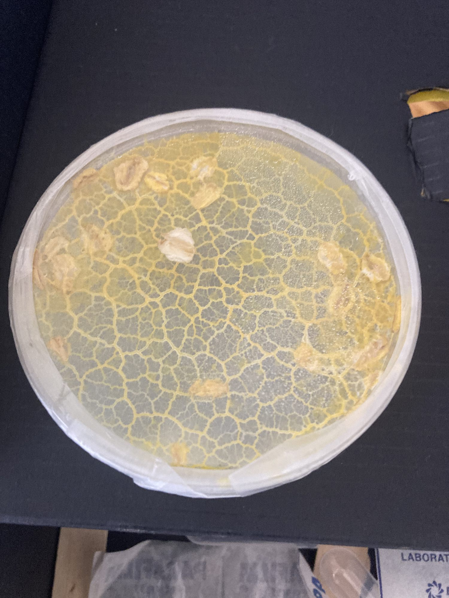
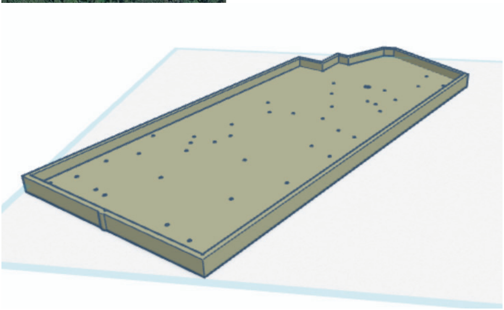
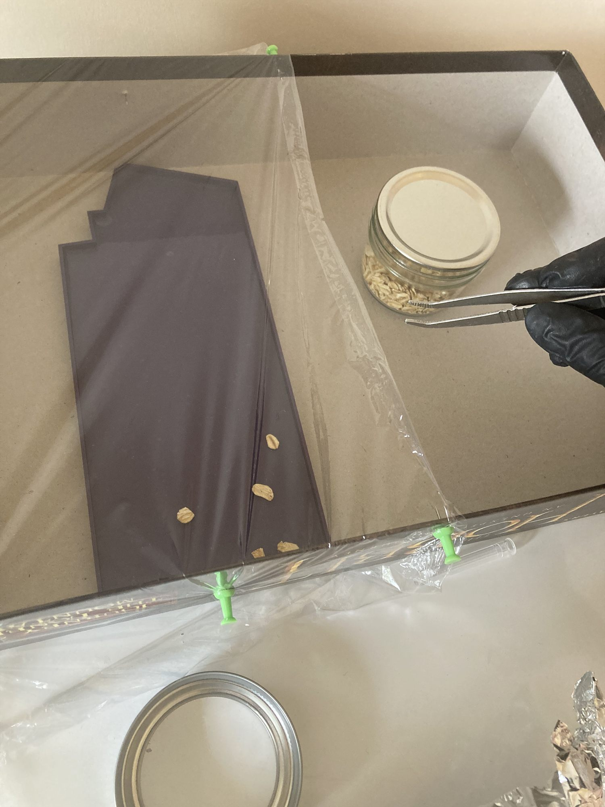
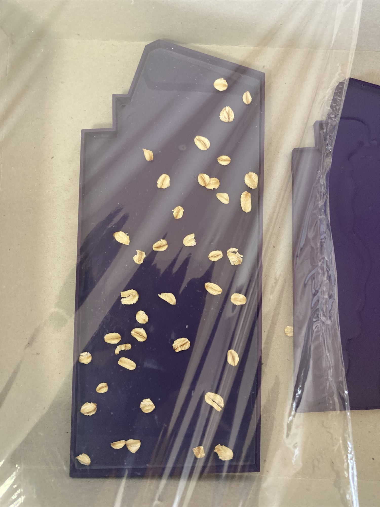
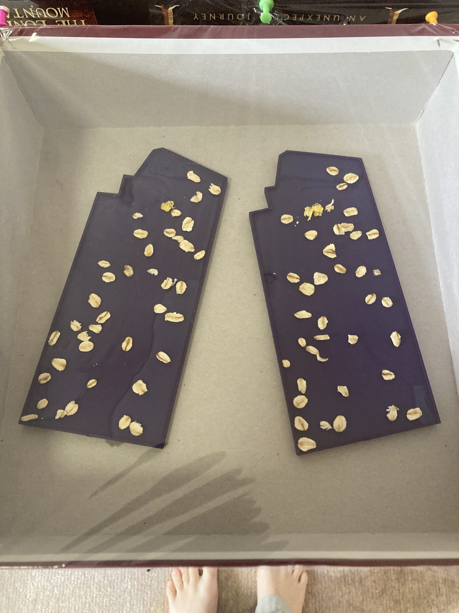
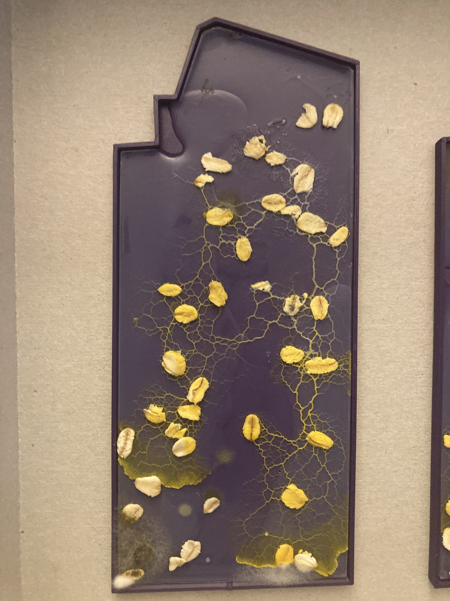
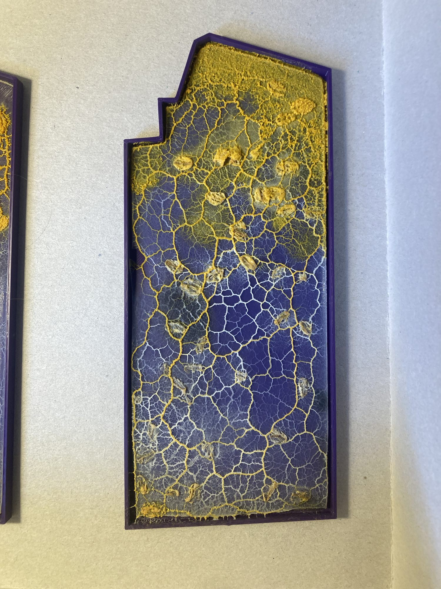
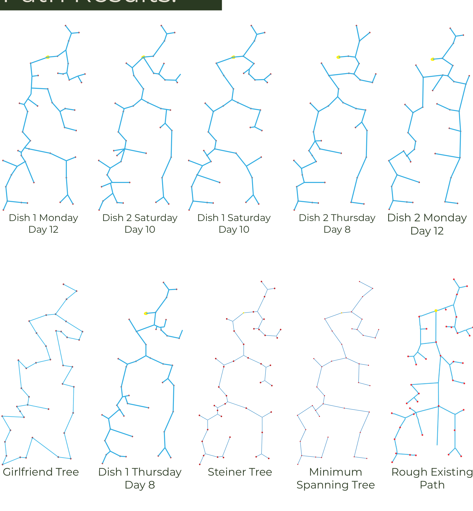
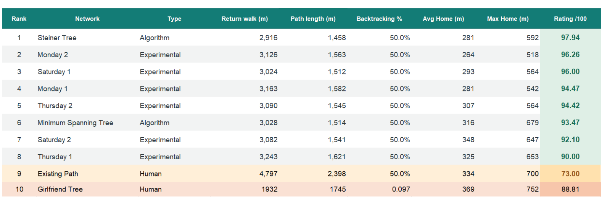

DIGITAL / 05
Physarum Mapping Experiment
- WORK
- Bio-informed pathway network proposal
- YEAR
- 2026
- MEDIUM
- Physarum polycephalum · Agar and oats · 3D-printed trays · CAD, SVG and network analysis
- CONTEXT
- Individual university project · ANU DESN2004 · Semester 2

Overview
Could a living organism help design a more efficient walking network? In this experiment I used the slime mould Physarum polycephalum as a non-human collaborator to explore alternative paths between 40 tree hollows being monitored on a property in Dunbogan, New South Wales.
I completed the project independently, from mapping and CAD through to 3D printing, cultivation, observations, network tracing and evaluation. The objective was not to assume a biological solution was superior, but to test how its spatial decisions compared with human and mathematical approaches.
Design Brief
Develop a proposed walking network connecting all 40 tree hollows, so that monitoring visits from the property’s home base could be more efficient. The evaluation needed to go beyond the shortest line on a map to consider how the network would be constructed and used.
I defined five measurements of efficiency: total walking distance for visiting the hollows and returning home, the length of constructed paths, backtracking, average distance from home and the maximum distance to an individual hollow.


Process
I converted the mapped tree locations into SVG and CAD geometry, then designed and 3D-printed shallow, site-shaped growing trays with markers for each destination. I prepared agar beds, placed oats to represent the tree hollows and introduced cultivated slime mould from the starting area.
Over roughly two weeks I photographed the changing networks. The organism did not grow a ready-made walking path; it responded to food and the conditions I had created. I traced stronger connections, discarded impractical detours and simplified its branching structures into networks that could be walked and evaluated.
I compared six slime-informed designs with a Steiner tree and a minimum spanning tree, as well as the existing path and a separate human-generated design. Using the five measurements meant that building fewer paths was not automatically better if it made routine monitoring journeys much longer.






Outcome
My final recommended design was the Monday Dish 2 network, with a modelled efficiency score of 96.26/100. This was substantially higher than the existing path’s 73.00/100, but below the highest-scoring mathematical option: a Steiner tree at 97.94/100. The proposal was mapped digitally and was not physically built or mown into the landscape.
The more important result was the collaboration itself. Slime mould offered an unexpectedly effective pattern of connections, but it took human judgement to turn those patterns into a usable proposal. Algorithms were generally faster, more reliable and more directly optimisable for this task.
The experiment also raised questions about what “collaboration” means when I controlled the organism’s environment, selected the food locations and chose which results mattered. Rather than treating biological network formation as neutral or replacing mathematical design, I came to see its value as another perspective to work alongside human decisions and computational tools.